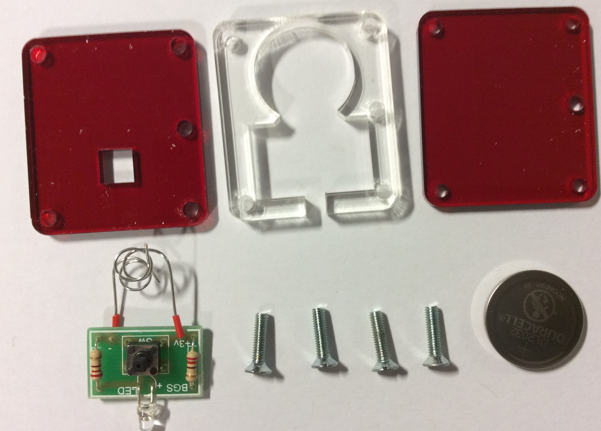
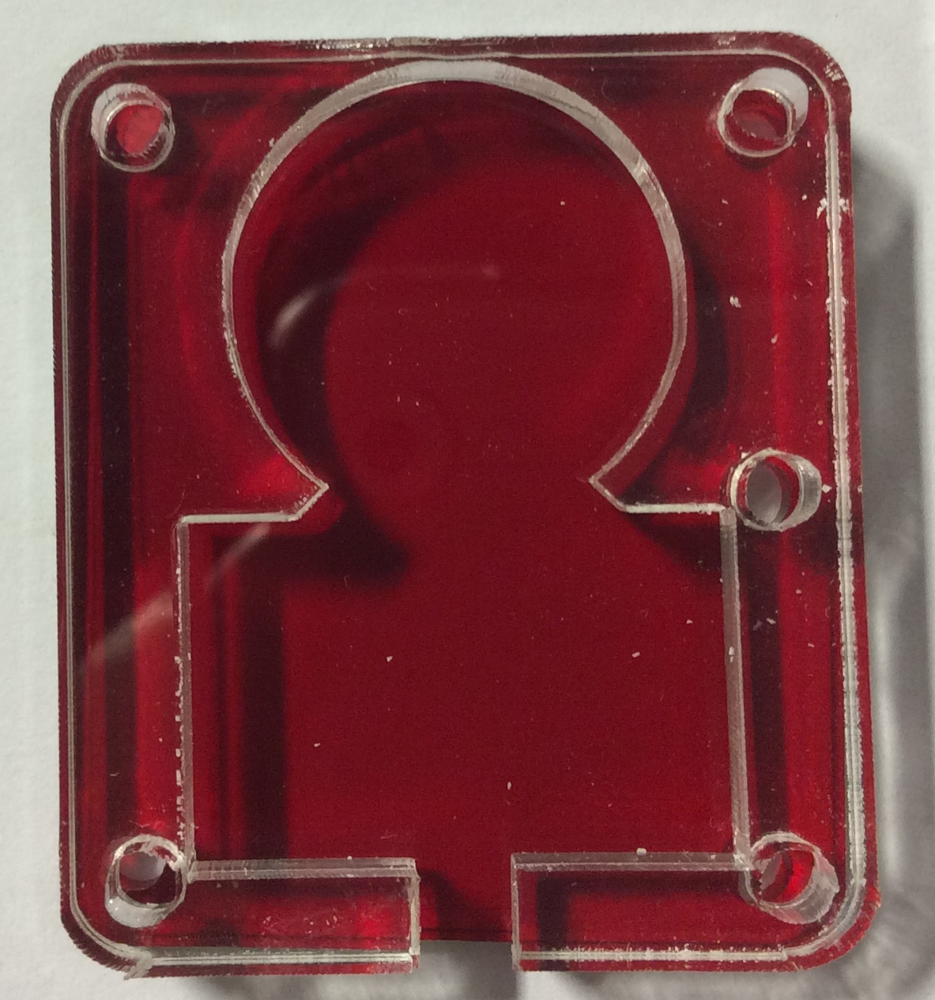
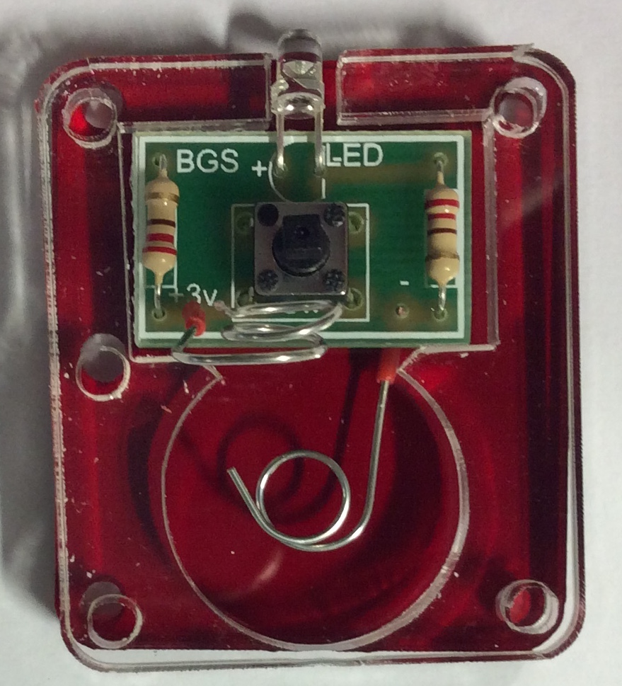
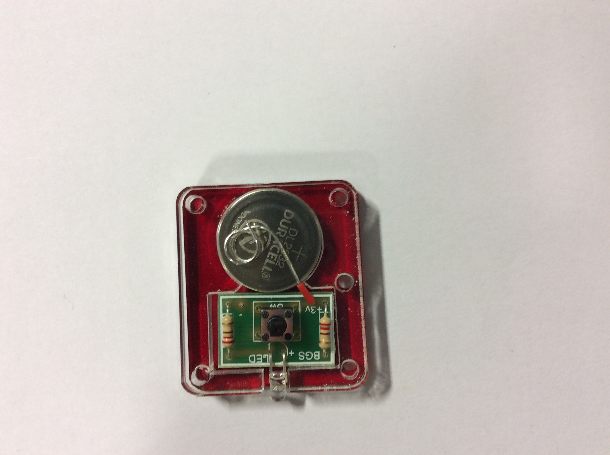
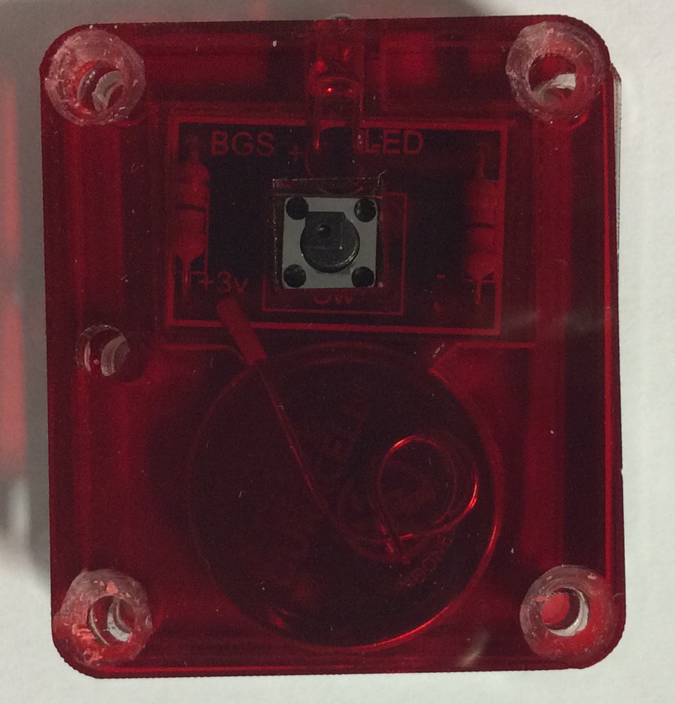
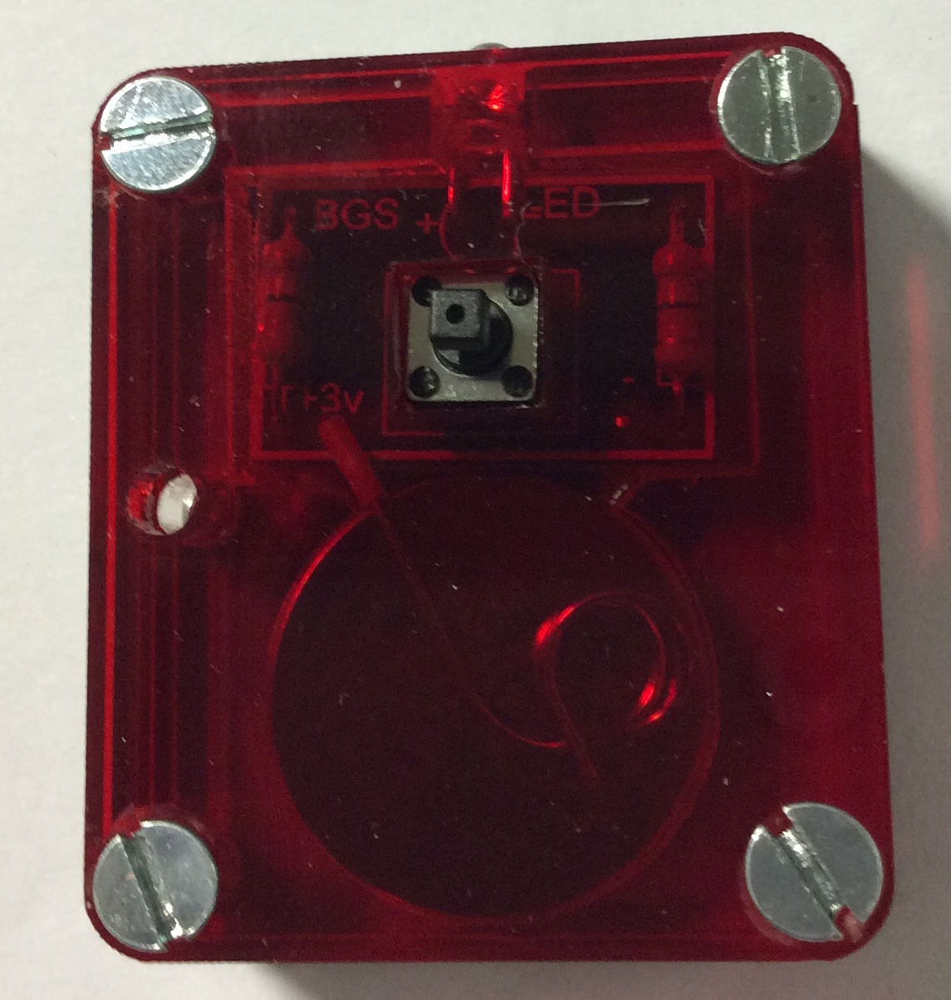
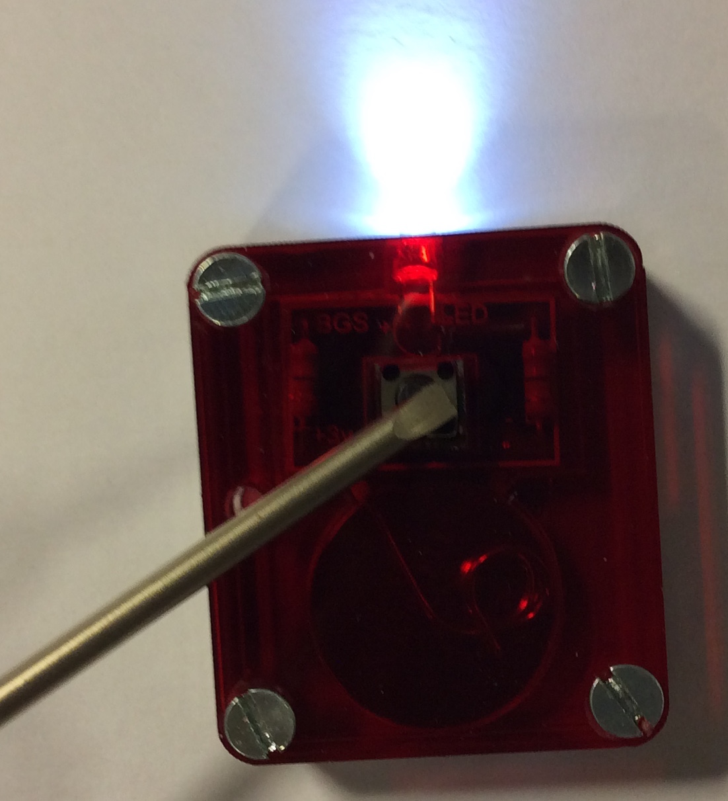

The LED Torch - Assembling the Housing
1 Preparation
Build It
- Assembly of your torch should take around an hour.
- First ensure you have all the correct parts for the housing.

Build It
- Firstly line up the 3 pieces so that they all have the extra hole pointing the same direction.
- Take the acrylic piece with the square hole in the top.
- Lay it flat on a workbench exactly as shown below and then use a countersink cutter to create countersinks where the 3mm holes are in each corner.
- Keep testing your countersinks using the 3mm machine screws, to ensure you have countersinks deep enough that the head of the screw is flush to the acrylic.

- Now place your finished PCB onto the acrylic base, make sure the extra hole is facing the correct way. Then place the middle piece of acrylic on top of that, ensuring the extra hole is pointing in the same direction.
 
- Make sure the bottom (negative) wire is coiled on the bottom of the acrylic and the top (positive) wire is out of the way.
- Now place the battery on the wire with the positive facing up.

- Bend the positive wire down onto the battery and place the top acrylic plate on top.
- Make sure the extra hole is facing the same direction and that the countersinks are on top.

- Push the screws throuh the top and screw them directly into the bottom plate.
- Please note: the bottom plate holes are slightly smaller than the rest, this is to allow the screws to self tap into it. There is no need to drill the holes bigger.

- Test your torch.

2 Assessment
Badge It
- Once you have completed your board, take it to your teacher to show them it working.
- Take pictures of your torch from three different angles, including at least one where the LED lights up.
- You will be assessed on the quality of your build.